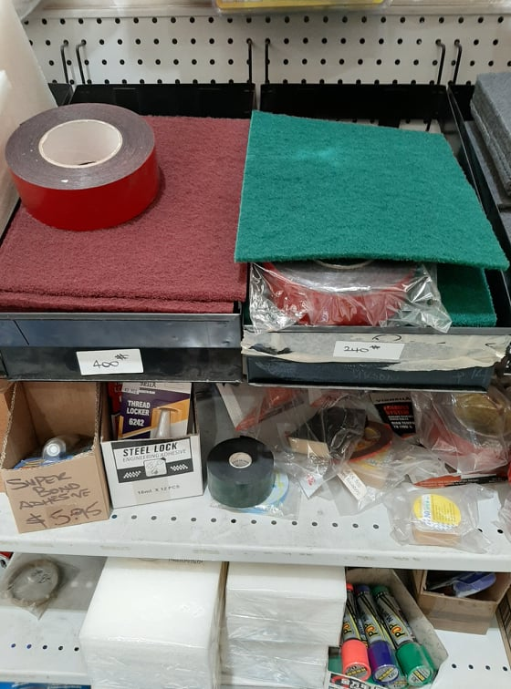
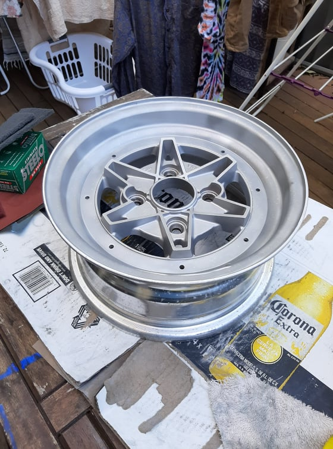
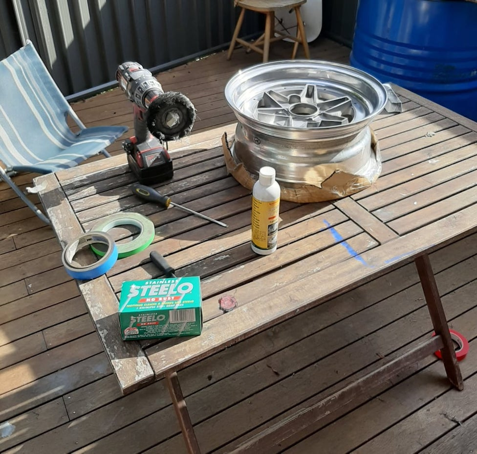
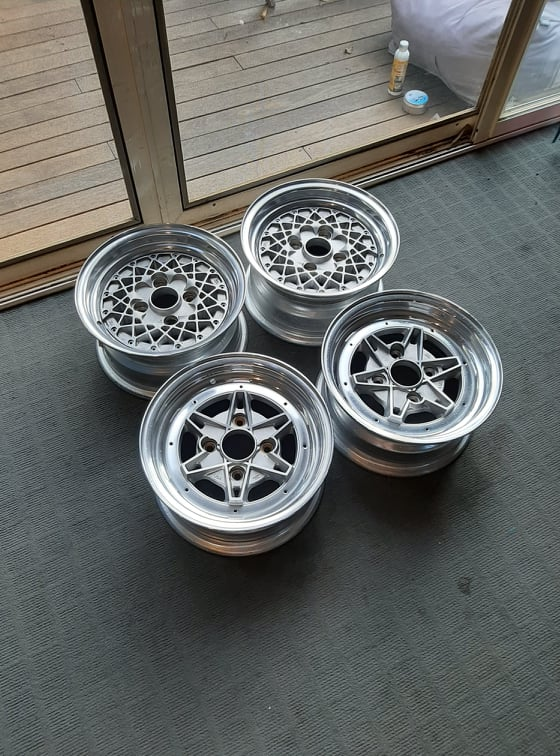

Refurbishing Wheels🔗
Related Content🔗
Table of Contents🔗
Guide by dooogs73🔗
Note: All images have been provided by dooogs73
Materials used
- Various scouring pads (up to 1200 grit)
- Polishing kit with buffing wheel
- Drill
- Liquid Reflection
- Jack stands
- Jack
- Wheel chock
Preparation🔗
- Ensure you have the materials specified above
- Remove all hardware from your wheels
- Put your car on jack stands (depending on drivetrain configuration)
- Ensure your 'drive' wheels are off the ground
Process🔗
- Remove existing wheels
- Mount the wheel to be refurbished
- Start the car and put it in gear so the wheels are freely spinning
- Wet the lowest grit scouring pad
Quote
I think the soap pads/steel wool are a god send with water. Doesn't seem to be as slow as sanding/doesn't clog as fast

- Polish the lip until you're happy
- Move on to the next higher grit until 1200 grit
- Turn off the car and remove the wheel

- Attach the buffing wheel to your drill
- Apply polish from kit and buff
- Apply Liquid Reflection

Result🔗

Last update: 2021-09-11